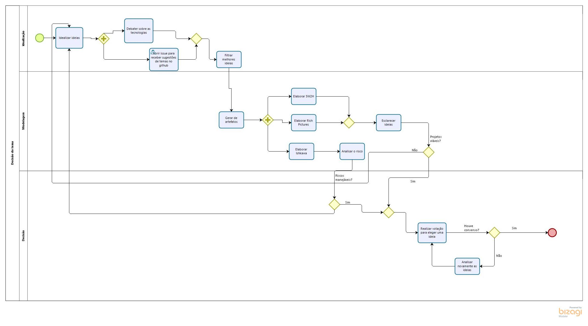
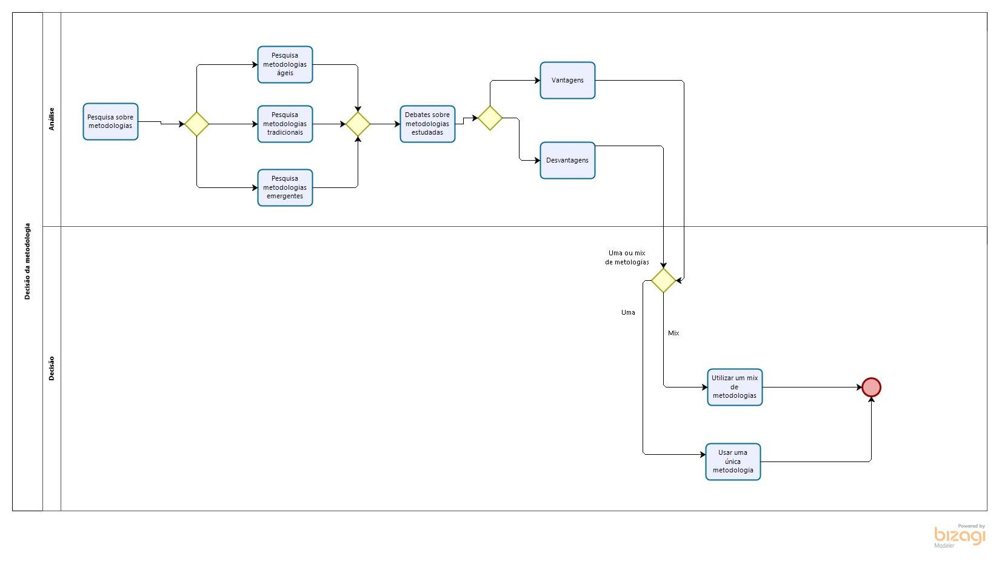
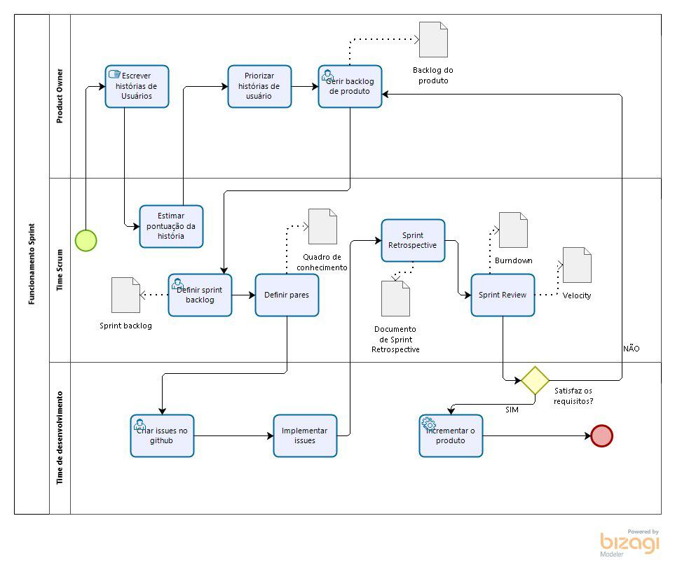
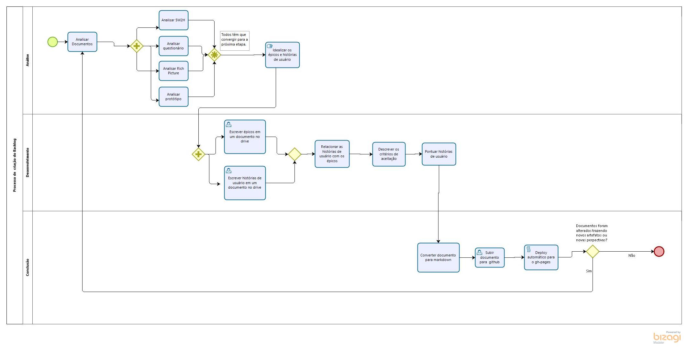
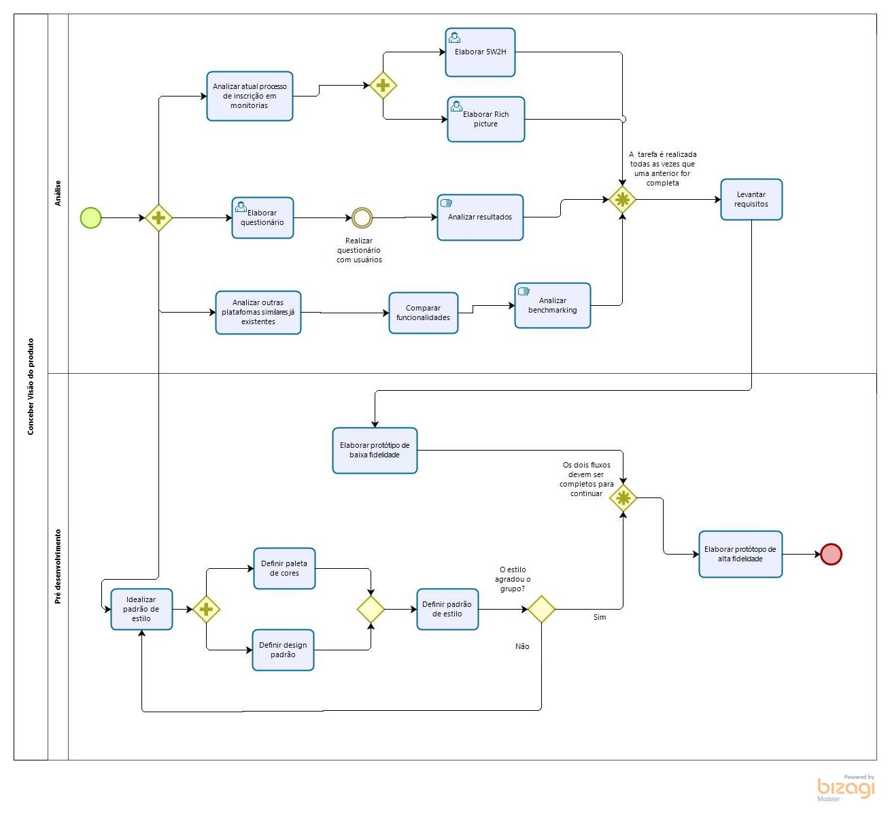

DIAGRAMAS BPMN
Histórico de Revisão
| Data | Versão | Descrição | Autor(es) |
|---|---|---|---|
| 01/09/19 | 0.1 | Adição da descrição | Gustavo Lima e Ivan Dobbin |
| 01/09/19 | 0.2 | Adicão do diagrama geral do processo de trabalho | Lieverton Silva e Welison Regis |
| 01/09/19 | 0.2 | Criação do diagrama de escolha do tema | Gustavo Lima e Ivan Dobbin |
| 01/09/19 | 0.3 | Criação do diagrama de escolha da metodologia | Gustavo Lima e Ivan Dobbin |
| 02/09/19 | 0.4 | Adicão do diagrama geral do processo de trabalho v2 | Lieverton Silva e Welison Regis |
| 04/09/19 | 0.5 | Adição do diagrama de Elicitar Requisitos | Lucas Aguiar |
| 05/09/2019 | 0.6 | Adição do diagrama da sprint | Lieverton Silva e Welison Regis |
| 05/09/2019 | 0.7 | Adição do diagrama do processo de criação do backlog | Gustavo Lima e Ivan Dobbin |
| 05/09/2019 | 0.8 | Adição do diagrama de conceber visão do produto | Gustavo Lima e Ivan Dobbin |
Introdução
Aqui estão listados diagramas modelados com o auxílio do software modelador Bizagi, que demonstram a organização baseada em tarefas ultilizada pelo grupo para elaborar determinados processos
Diagramas BPMN
Diagrama Geral
Versão 1.0

Versão 2.0

Decisão do tema

Decisão da metodologia

Elicitar Requisitos

Sprints

Processo de criação do Backlog

Conceber visão do produto
